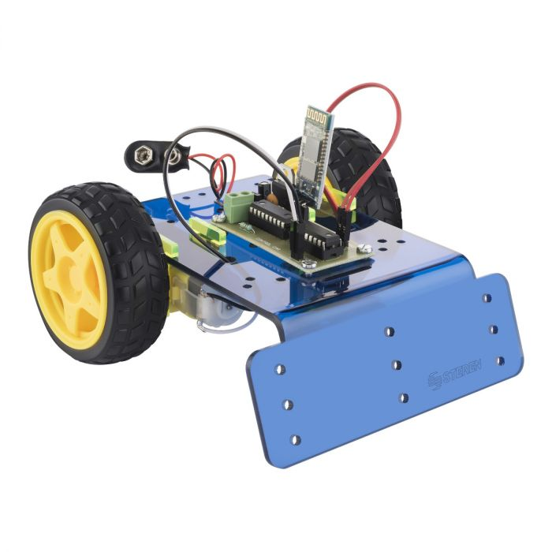

El inicio en la creacion de un robot
Todo proyecto a gran escala tiene sus incios para ponerse en contacto con el tema de la robotica.
El proceso es largo al llevar un robot del como el que esta en la imagen a uno ya mas especializado y mas marcado por una largo trabajo de personas dedicadas vario tiempo.
